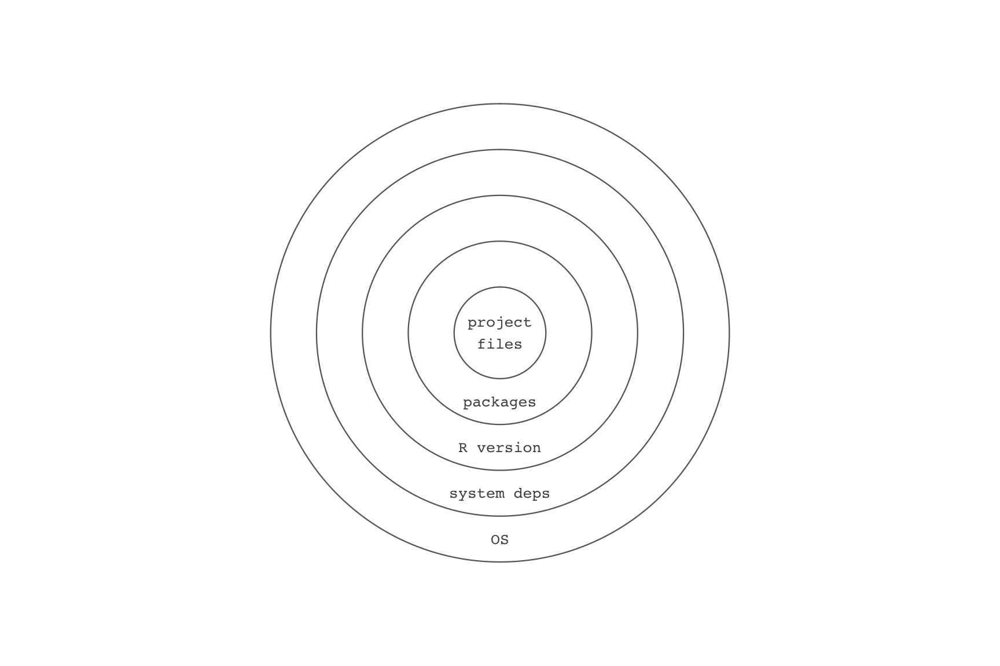
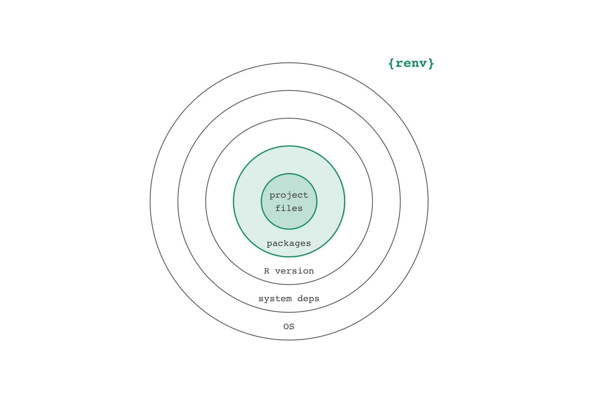
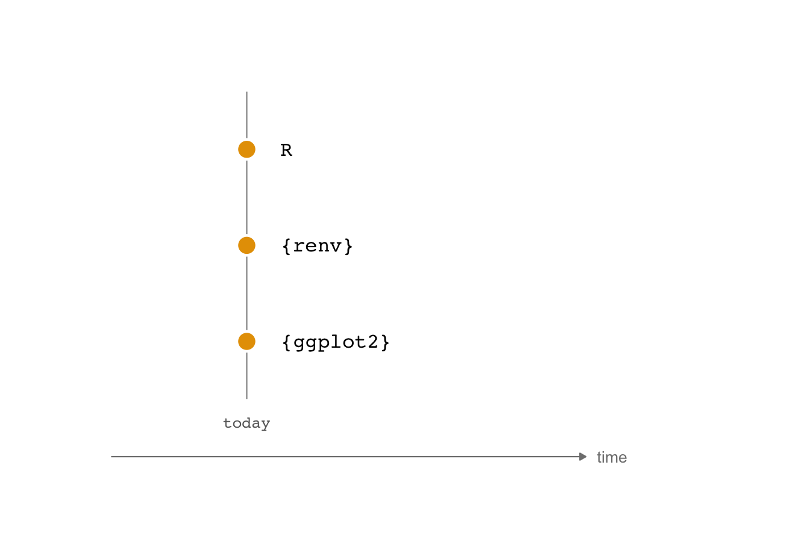
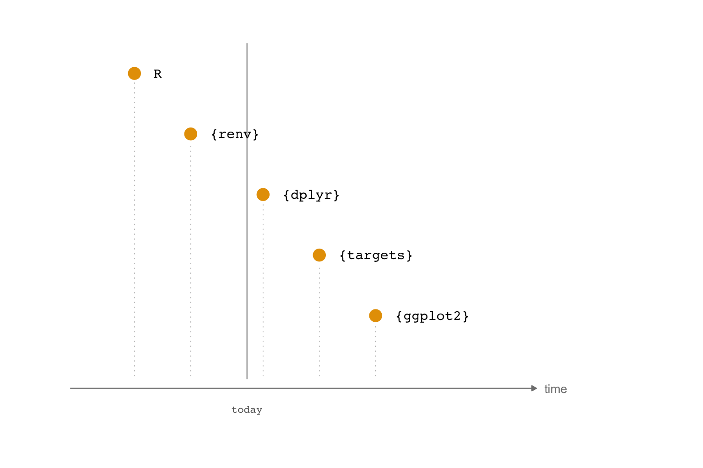
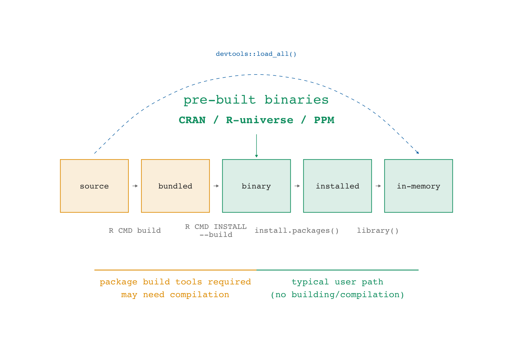
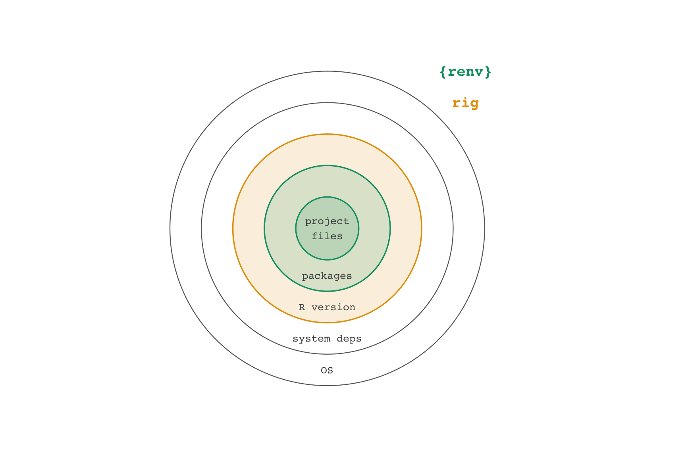
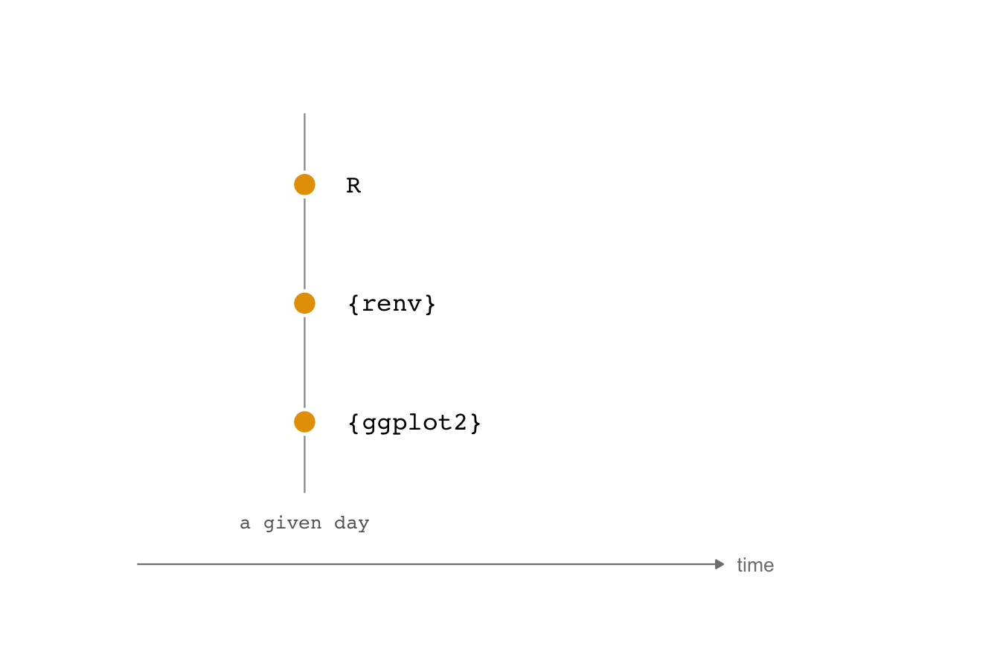
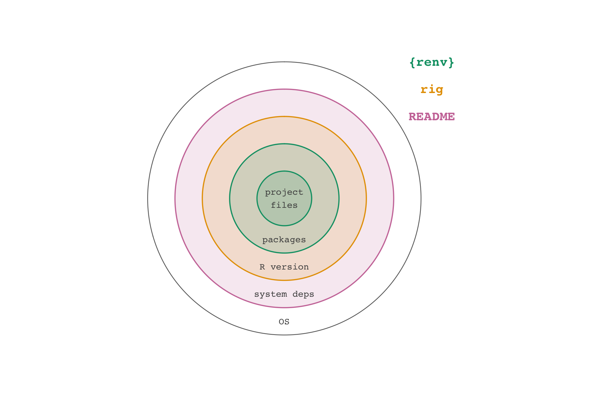
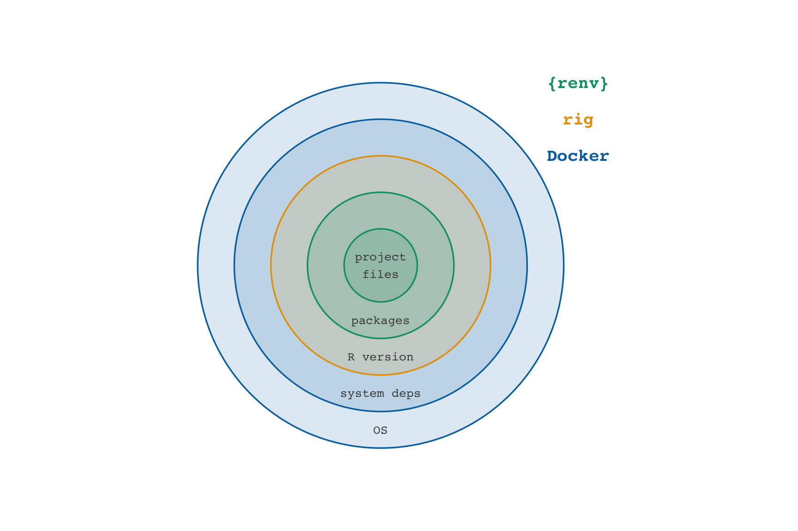

Great Scott!
A Chronicle of the Dangers of Time Traveling in R
- Unstable Equilibrium
- The Diagonal
- The Tale of Lemon Lucifer
- The Time Traveler’s Handbook
- An Elegy for Cassini
Unstable Equilibrium
renv workflow
- Create a project
renv::init()- Write code, install packages
renv::snapshot()- Iterate
Restoring project states
- Clone and open project
renv::restore()


uv workflow
- Create a project
uv init- Write code,
uv add <python package> uv run script.py- Iterate
Restoring project states
- Clone and open project
uv sync
The Diagonal
R works great today….

…but entropy comes for us all

Package states
- Package developers write in source code, then bundle the code to send to CRAN.
- CRAN builds binaries or otherwise supplies the bundle to install.
- We install the result with
install.packages()and friends. - We bring an installed package into memory with
library().

Package repositories
CRAN
"https://cran.rstudio.com/"
attr(,"IDE")
[1] TRUE- CRAN offers binaries for Windows and Mac, typically for the latest version and the version before that
- CRAN archives package bundles for all versions that have been on CRAN, but these then need to be built from source
Package repositories
- Posit Package Manager offers binaries for many OSes as well as daily-ish snapshots
- R-Universe and R-Multiverse are increasingly important community-led, GitHub-based repositories that serve binaries
Convincing renv to use a repo
renv::checkout(repo = ...)
- You can change the repository your packages are installed from via
renv::checkout()
renv::checkout(date = "yyyy-mm-dd")
renv::checkout()also has a fast way to checkout from Posit Package Manager’s daily CRAN snapshots
rig: The R Installation Manager
- rig is a command line tool that you use in the terminal (not the R console) to manage R installations
rig add <version>, e.g.rig add 4.1.0rig add releaserig default <version>,rig rstudio <version>- You can also look up the date an R version was released with
rversions::r_versions()to figure out which R version was the release version on a given date

R works great on a given day



The Tale of Lemon Lucifer
renv

renv
renv
The README says to use:
Then ignore cmdstanr:
Success!!
rv workflow
- Create a project
rv init- Write code,
rv add <R package> rv run script.Ror work directly in R- Iterate
Restoring project states
- Clone and open project
rv sync
rv
rv
Success!
Running the project
Case 38: A Buffalo Passes the Window
Goso said, “A buffalo passes through a window. His head, horns, and four legs all go past. But why can’t the tail pass too?”
docker
Pinning cmdstanr:
RUN R -e 'cmdstanr::install_cmdstan(dir = "/home/rstudio/.cmdstan", cpp_options = list("CXX" = "clang++"), version = "2.36.0")'Pinning latex:
RUN Rscript -e 'tinytex::install_tinytex(version = "2025.02")'
...
RUN tlmgr repository set https://ftp.math.utah.edu/pub/tex/historic/systems/texlive/2024/tlnet-finalThe Time Traveler’s Handbook
Do not split yourself across time
- Pick a day
- Identify a source of binaries and the R version for that day
- Sync your packages and R version to that day
- Move forward in time all at once
renv
- For new projects, use
options(repos = "..."). Check your lock file to make sure renv is playing along. - For existing projects,
renv::checkout(date = "..."). In my experience, you may need to manually change repos in the lock file.
rv
- For new projects:
rv configure repository - For existing projects:
rv migrate renv
rig
- Going back in time:
rversions::r_versions():rig add <version>,rig default <version_name> - Going forward in time: use
rig add releaseandrig default releaseto update to today’s released version
Containers together with package managers
- Using a specific day with a source of binaries makes it substantially easier to restore environments in containers
- Containers extend the reproducibility half-life of a project
- Do not split your container across time, either
An Elegy for Cassini
Project end-of-life
- Without maintenance, the renv option of lemon-lucifer has reached end-of-life.
- Are you willing to maintain your project? For how long?
- Do other people know if a project is active, in maintenance, or crashing into Saturn?